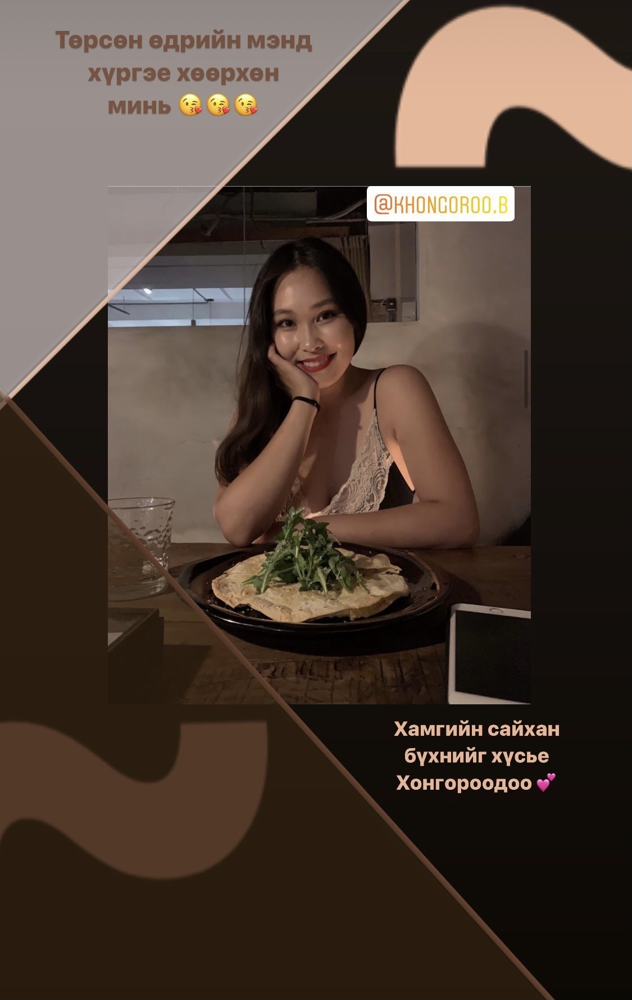
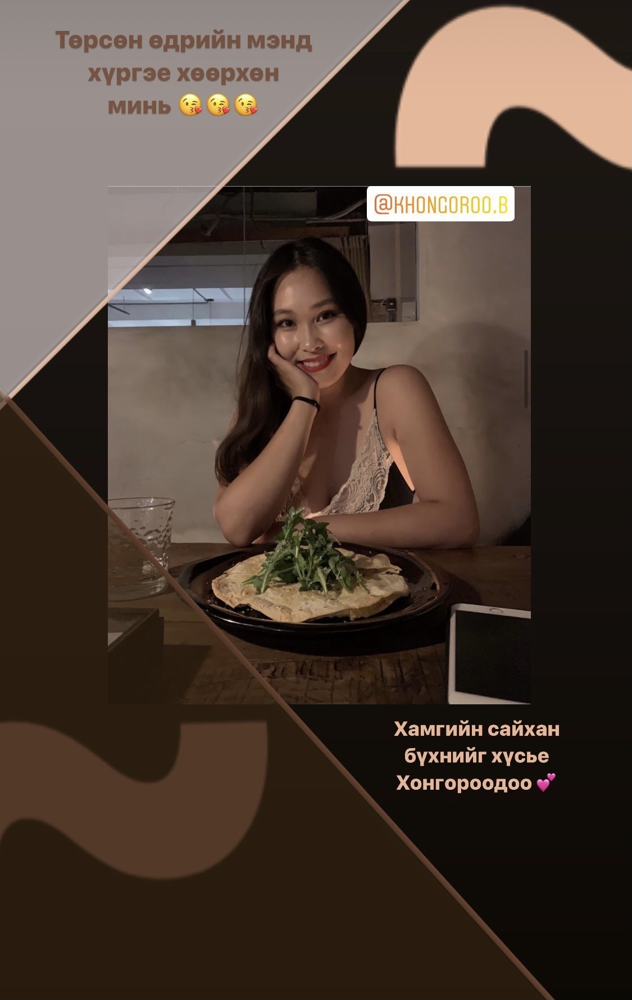

| Багаасаа төгөлдөр хуур сурах хүсэлтэй байсан хэдий ч чадалгүй явсаар саяхнаас л төгөлдөр хуур тоглож сурч байгаа. Маш сонирхолтойгоос гадна маш их тайвшруулдаг нь төгөлдөр хуурын хамгийн сайхан тал нь гэж боддог. Одоохондоо хэдхэн ая тоглож чадах ч удахгүй олон аяыг төвөггүй тоглодог болно байх аа. |

|
| Сүүлийн үед мөн Инстаграм дээр хүмүүст зориулсан сториг бүтээлчээр хийх сонирхолтой санагдах болсон. Тухайн хүний төрсөн өдөрт эсвэл онцгой үйл явдалд нь зориулж стори хийж байгаа. Зарим зургаасаа сонирхуулъя. |
 

|
| Харин миний бүр багын хобби бол nail art. Одоо завгүй ажлын хуваарь, амьдралаас болоод өөрөө хумсаа будаж чадахгүй байгаа хэдий ч хумсаа будуулах, будсан хумсны зургаа дарах дуртай хэвээр байгаа. |


|